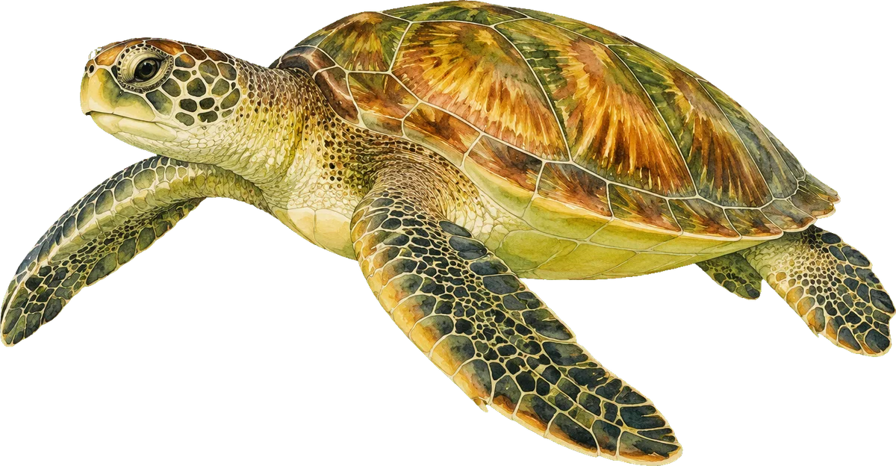
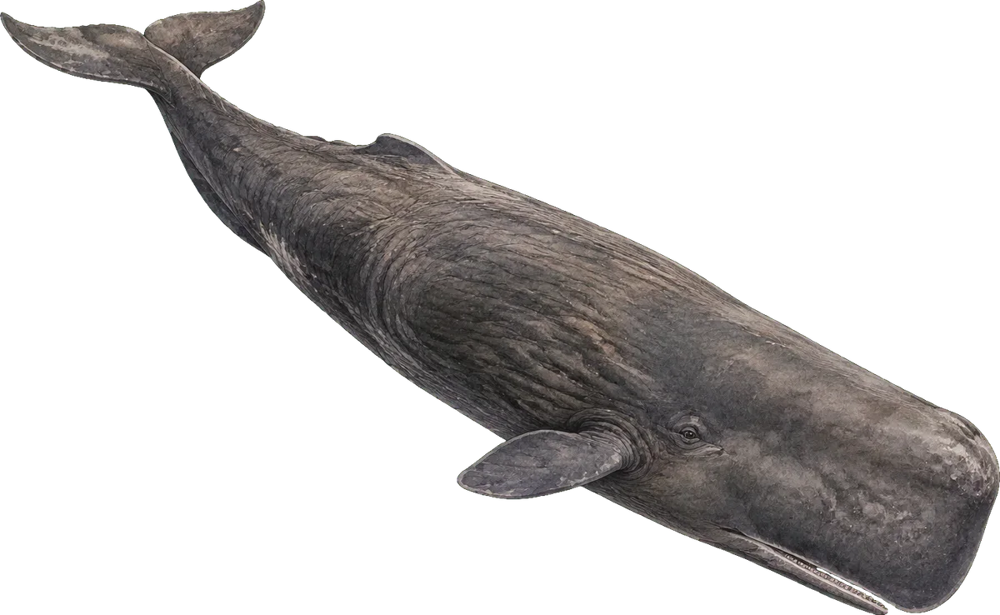
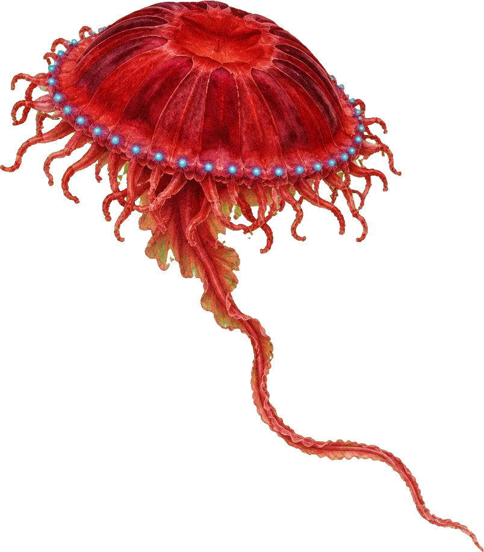
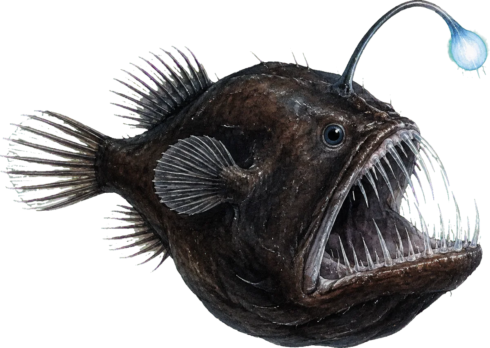
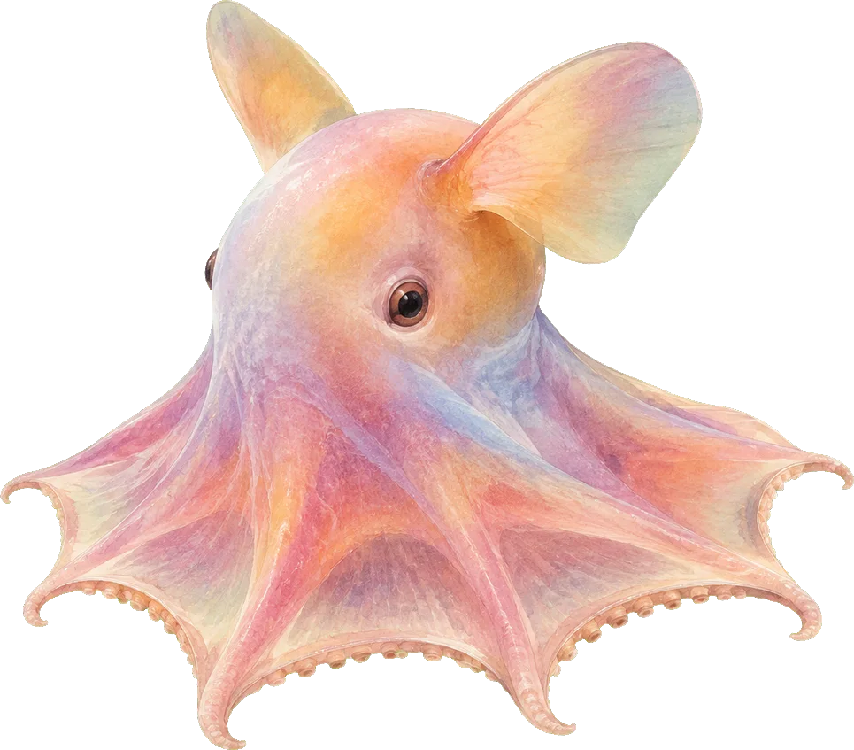
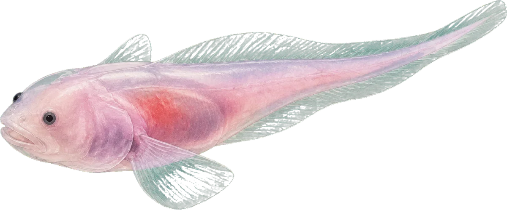
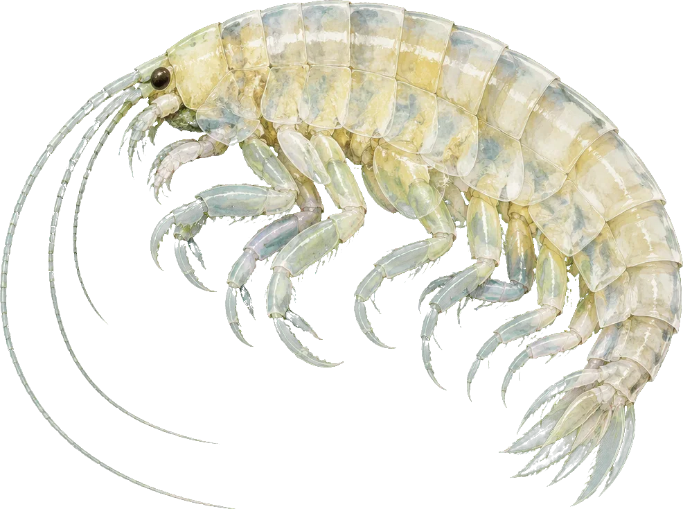
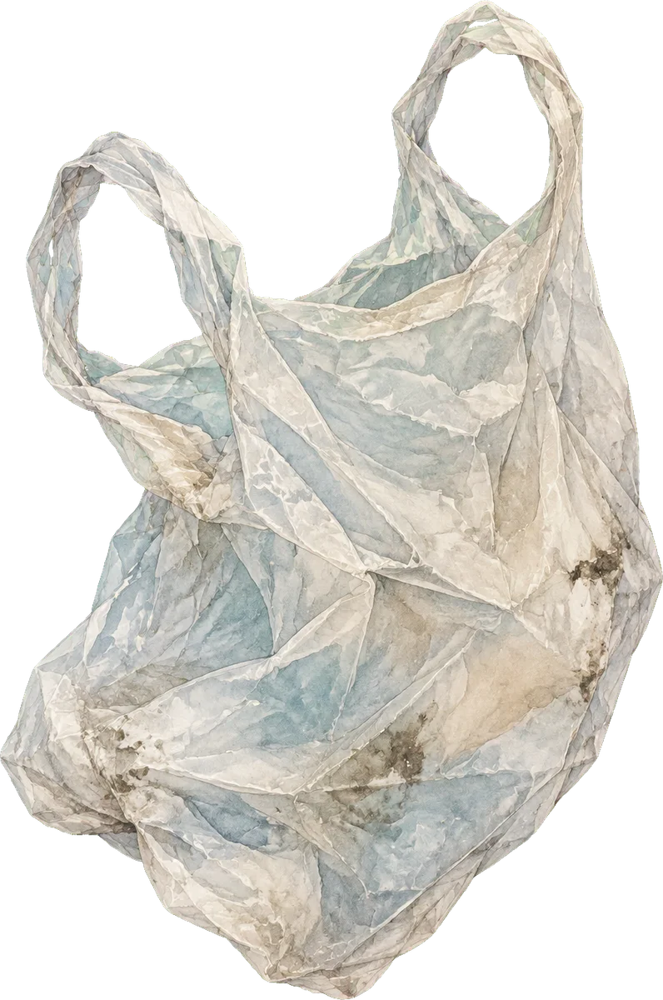

The deep ocean is the largest living space on Earth, and most of it has never been seen by a human eye. Scroll to dive with us to the floor of the Challenger Deep.
Scroll to begin the descent

Green sea turtleChelonia mydas, observed at 25 m
Everything you have ever breathed has passed through the sea.
Drifting phytoplankton in this thin sunlit layer make roughly half of the oxygen on the planet. The ocean has soaked up about ninety per cent of the extra heat our emissions have trapped, and around a quarter of the carbon dioxide.
Most of that carbon does not stay up here. It sinks, as falling flakes of dead plankton, into a deep sea that holds over ninety per cent of the habitable space on Earth. That is where we are going.
The twilight zone is the busiest commute on Earth.
Below 200 metres there is too little light for anything to photosynthesise, and the water turns the blue of a gas flame. Every night, trillions of lanternfish, krill and squid swim hundreds of metres up to feed, then sink back before dawn: the largest animal migration on the planet, repeated every day.
Each round trip carries carbon down with it. Scientists call it the biological pump, and it has barely been measured.

Sperm whalePhyseter macrocephalus, hunting squid at 960 m. They hold their breath for over an hour.
From here down, the only light is the light you bring.
Your lamp is on. Move your cursor to look around. Some animals will answer it with a flash of their own.
Your lamp is on. Drag a finger to aim it, or let it sweep on its own. Some animals will answer with a flash of their own.

Atolla jellyfishAtolla wyvillei, 1,550 m. Red reads as black down here; it is the best camouflage there is.
Threat one
Bottom trawling ploughs ecosystems older than cities.
Industrial trawlers drag weighted nets across seamounts and slopes as deep as two thousand metres. A single pass can flatten deep-water coral that has been growing for thousands of years. The fish they target, like orange roughy, can live past 150 and breed late, so populations collapse long before anyone notices.

Humpback anglerfishMelanocetus johnsonii, 2,000 m. The lure glows with bacteria she farms.

Dumbo octopusGrimpoteuthis, 4,150 m. It swallows prey whole and swims with its ears.
Threat two
Mining companies want to vacuum the abyssal plain.
Scattered across the Pacific floor between Hawaii and Mexico lie potato-sized polymetallic nodules, rich in nickel, cobalt and manganese. They grow a few millimetres every million years. Machines designed to collect them would strip the seafloor, the animals living on the nodules with it, and send plumes of sediment drifting for kilometres.
Most species found in survey areas have never been named. Once the nodules are gone, nothing that depends on them comes back on any timescale that matters to us.
Twelve years of diving, logged.
46expeditions to seven ocean trenches
9.6million km² under new protection we helped win
1,300students who have sailed with us
91pence in every pound spent on the work itself
The hadal zone is named after the underworld.
It exists only in trenches, where one plate of the Earth's crust dives beneath another. The pressure is the weight of fifty jumbo jets on a single person. Life here is not rare. It is simply unvisited: fewer people have reached the bottom of the Challenger Deep than have flown into space.

Mariana snailfishPseudoliparis swirei, 8,150 m. Fish cannot survive much deeper; their cells would fail.
Threat three
The deepest animals on Earth are already eating our plastic.
When researchers opened amphipods collected from six of the world's deepest trenches, more than seven in ten had plastic fibres in their guts. In the Mariana Trench, every single one did. Industrial chemicals banned in the 1970s have turned up in them too, at levels higher than in crabs from some of China's most polluted rivers.

Hadal amphipodHirondellea gigas, 10,250 m. A scavenger that can digest sunken wood.

Observation 0410,898 m
Our lamp finds a shopping bag.
This is not invented for effect. A single-use plastic bag lies on the seafloor of the Mariana Trench at 10,898 metres, catalogued by scientists in the Deep-sea Debris Database. It is the deepest piece of litter ever recorded. It got here before we did.
10,935 m. The floor of the Challenger Deep.
Bring light back to the deep.
Every expedition, every court brief and every satellite watch starts with a donation. Choose what you can give, and we will send you the footage of what it found.
Thank you. You just lit the trench. Watch your inbox for the dive footage.
Join the crew
We train volunteers to annotate deep-sea video from home. Two hours a week, and you will see animals that may not have names yet.